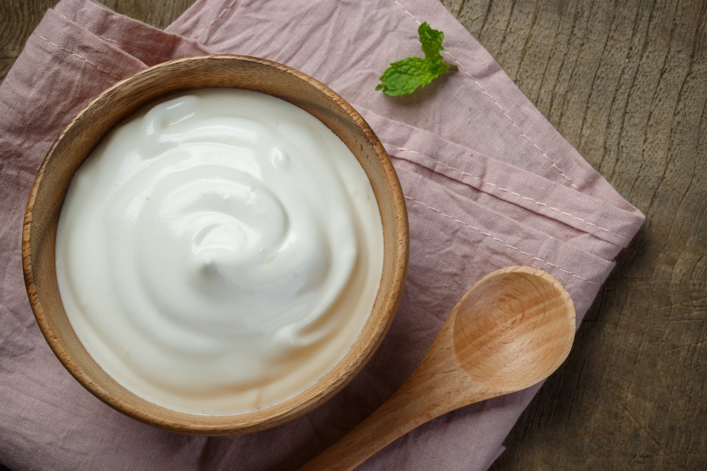

What is it?
Immunity is defined as the capacity of the body to resist from pathogenic agents like: viruses, bacteria, foreign particle etc. It is the ability to produce resistance against the same.
However, the concern regarding immunity has become more important and relevant after the Corona virus pandemic or COVID-19 hit the world. This outbreak has taught us that people with a strong and healthy immune system are better equipped to handle the attack of Corona virus.
Here are the food that is going to enhance your immune system.
1. Papaya, watermelon, Mango and many other fruits are found have amazing store of
Vitamin A, Vitamin C, folate, Potassium and B Vitamins which accelerate the production
of Immunity building cells.

2. Citrus Fruits: Oranges, Indian Gooseberry (Amla), Tomato, Pumpkin, Lemon, sweet lime, Tamarind etc. These orbs are filled with Vitamin C, It helps encourage the production of white blood cells known as lymphocytes and phagocytes, which help protect the body against any infection.
3. Green leafy vegetables: Methi, Spinach (palak), Mustard Leaves (Sarso), Amaranth Leaves (Rajgira leaves/ Math) , Colocasia Leaves (Arbi ke patte), Drumstick greens (Saijan patta) young leaves contain more vitamin C than mature leaves. They are richer source of Vitamin A, Calcium, potassium, zinc and Iron these property helps in strengthening the immune cells
4. Curd: They support our digestive system, increase good bacteria, and promote overall health. It is important to add curd in your diet because it is a source of vitamin D, calcium, potassium, and other nutrients that helps in improving the immune system naturally. 
5. Legumes & Pulses: Chick pea, green gram, rajma, chana,etc. Apart from being a rich source of protein, they are a great source of potassium, iron, and fiber. Studies have shown various beans, particularly black beans, improve gut health by enhancing intestinal barrier function and enhancing the number of beneficial bacteria. This might help in reducing the occurrence of gut-associated illnesses. Healthy gut bacteria also improve immune system function.

There is no absolute way to avoid any infection completely; strengthening the immune system with particular food ingredients can go a long way to reduce your risk of contamination. Our immune system plays a vital role in warding off viruses and bacteria from affecting our body and causing damage. Consuming these foods on a daily basis will not only keep you healthy but also help you achieve a stronger immune system, thereby keeping you immune and disease-free.